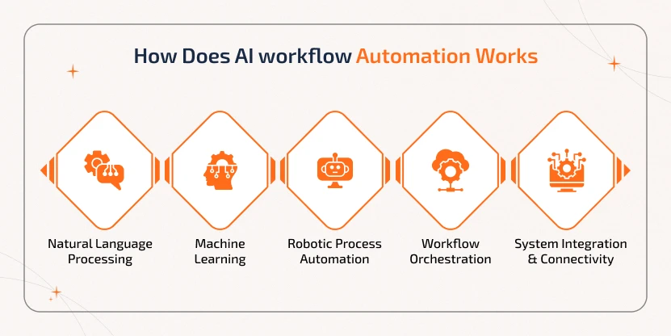
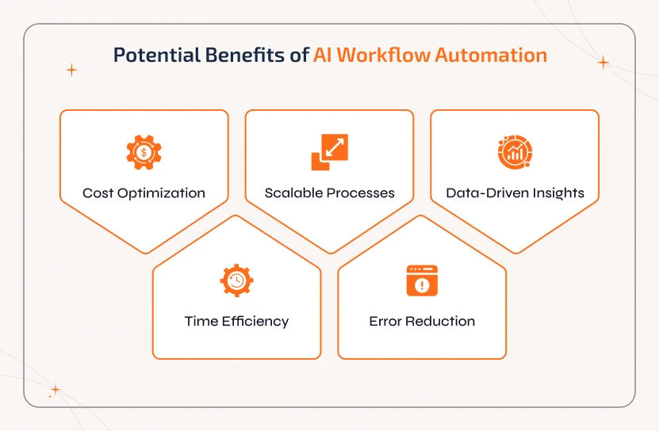
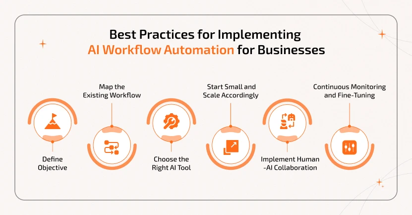
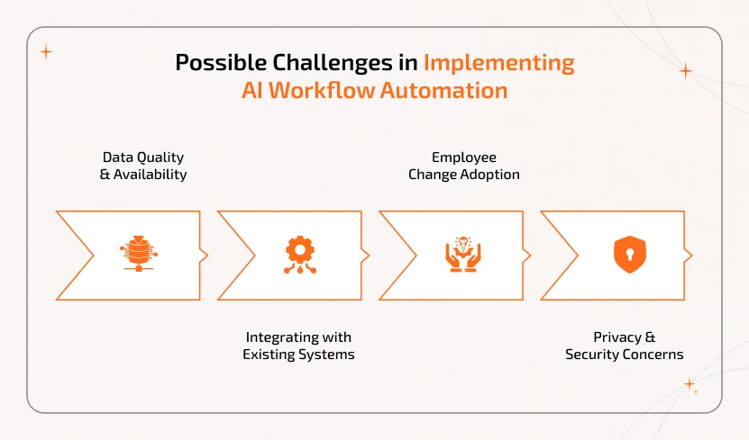

Surprisingly, AI workflow automation is not just another tech buzzword. It’s more like a competitive edge that splits rapidly-moving businesses from those who get stuck in the slow lane. Just imagine instant approvals, customer queries being fixed before they pile up, and data flowing seamlessly across your tools without human intervention. You heard it right! This is actually not the future or some distant dream. It is what an AI development company delivers right now for a wide range of businesses that refuse to settle for inefficiency and stay behind in innovation.
So, the actual benefit is, it scales with your ambition. It doesn’t matter whether you’re running a lean operation or handling a complex enterprise ecosystem. AI workflow automation adapts to your needs and minimize significant costs while focusing on productivity at the same time. This approach is more like doing extra work with minimal human intervention, freeing teams to focus more on creativity, innovation, and growth, while AI take care of the rest.
What is AI Workflow Automation?
AI workflow automation takes advantage of Artificial Intelligence to carry out repetitive and time-consuming tasks to make business run faster and smarter. Unlike the traditional automation functionality, it doesn’t just follow standard rules set by the developers. Instead, it does learns, adapts, and makes data-driven decisions. This strategy connects multiple systems to streamline the workflow across the organization.
From generating real-time reports to responding to customer queries instantly, AI-based automation reduces potential errors and boosts efficiency. With automation, every process becomes faster, smarter, and more reliable, providing your business with the ability to scale without breaking a sweat.
Why is AI Workflow Automation Important?
In this digitilized world, AI workflow automation is mandatory. Because it does specify flaws and errors that human agents barely notice. Mostly, the traditional automation faces micro-delays, unnecessary approvals, and inconsistent data handling. This AI-based automation indicates industries aren’t just working smarter and faster. Along with that, they’re removing operational blind spots that would’ve cost thousands or more than that over time.
On the other hand, one of the underestimated impacts of AI workflow automation is the ability to impose compliance and accountability automatically. Meanwhile, in heavily regulated industries, even a small oversight can trigger legal issues. So, AI-driven workflows ensure that each and every step adheres to compliance standards and points out anomalies.
Overall, AI workflow automation creates a layer of operational resilience and loyalty that’s a bit hard to achieve only through manual processes.
With Zero Guesswork?
Take advantage of AI workflow automation to turn hectic manual work into a stress-free process.
How Does AI Workflow Automation Works?
AI workflow automation is more like a smart traffic control system that keeps everything under control. It helps with the tasks to perform smoothly and optimized the workflow whenever needed. Here are the key technologies and functions used.

Natural Language Processing
NLP is the backbone of machine understanding. It empowers AI systems to recognize
and interpret human language. This enables automating tasks like sentiment analysis,
conversational chatbots, and document classification. By understanding the tone and
accents, NLP allows communication to flow efficiently, bridging the gap between
machines and humans.
Machine Learning
Machine Learning (ML) allows the AI systems to learn and adapt from past data. This
identifies similar patterns and makes predictions more obvious. In workflow
automation, these models optimize the process by anticipating the outcome, detecting
anomalies, and personalizing the user experience. This major adaptability leads to
continuous improvement and efficiency gains.
Robotic Process Automation
RPA (Robotic Process Automation) utilizes software robots to automate repetitive
tasks across apps. By impersonating human actions, RPA accelerates processes like
data entry, report generation, and invoice processing. This approach reduces human
error and frees up employees for more strategic activities.
Workflow Orchestration
More like a conductor leading an orchestra, workflow orchestration coordinates
multiple AI systems and processes. This ensures they work seamlessly, like each and
every task happens in the exact sequence at the right time without any potential
clashes or delays. In the meantime, effective orchestration maximizes efficiency and
ensures complex works run smoothly across departments.
System Integration & Connectivity
System integration in business process automation connects AI tools with the
existing business software system. This approach creates a unified ecosystem, which
ensures effortless data flows across platforms and enabling automation to operate
end-to-end. Moreover, with proper integration, businesses can unlock the full
potential of AI workflows, minimizing silos and boosting operational agility.
Use Cases of AI Workflow Automation
AI workflow automation makes a huge impact on businesses and boosts efficiency in many ways. Here are the main use cases of AI-based automation.
Sales & Lead Management
With AI tools, businesses can automatically qualify leads. Also, they can track
customer
interaction and anticipate buying behaviour. In the meantime, the sales team can get
timely
insights and recommendations, which enable high conversion rates.
- Lead scoring
- Customer interaction tracking
- Sales recommendations
- Predictive sales analysis
- Pipeline management
- Automated follow-ups
Customer Support Automation
AI-powered workflow automation is a literal boon to the customer support sector. The
AI
chatbots and virtual assistants can handle routine queries, FAQs, and complaints,
which
reduces response times and make it easy for human agents.
- Smart assistants
- AI chatbots
- Sentiment analysis
- Ticket categorization
- Automated feedback collection
- Knowledge-based automation
HR & Recruitment
From screening candidates’ resumes to scheduling interviews, AI workflow automation
streamlines the repetitive tasks for Human Resources. It can easily analyze the
candidate’s data and pick up the right talent with specific job requirements. This
can
speed up the recruitment process and reduce bias in selection.
- Resume screening
- Interview scheduling
- Candidate ranking
- Onboarding automation
- Employee analytics
- Bias reduction
Finance & Accounting
AI in finance and accounting can handle invoice processing and expense reporting.
These
automated systems helps in reducing human-made errors and also in providing
real-time
insights to financial health. Instead of manual bookkeeping, best AI-powered
automation
allows the finance team to focus on strategic decision-making.
- Fraud detection
- Expense reporting
- Financial forecasting
- Compliance checks
- Financial forecasting
- Invoice processing
Marketing Campaigns
In the marketing sector, AI understands customer data to personalize campaigns,
segment
audiences, and foresee engagement. Industries can leverage best workflow automation
tools to schedule social media posts, emails to save time and ensure a constant
brand
presence.
- Personalized campaigns
- Predictive engagement
- Social media scheduling
- Audience segmentation
- A/B testing automation
- Performance analytics
Get numerous benefits from the AI workflow services for your business growth.
Potential Benefits of AI Workflow Automation
Explore the key benefits of AI workflow automation that drive productivity, accuracy, and innovation across organizations.

Cost Optimization
Reducing manual work will significantly cut operational costs, where AI ensures
processes run faster and more securely. Minor errors, quick output, and smarter
resource management contribute to a healthier bottom line.
Scalable Processes
The operational demands will grow as
your organization
evolves. AI-based automation scales effortlessly. It can handle increased workloads
without requiring extra manual workers.
Data-Driven Insights
Instead of just executing tasks,
automation gathers and analyzes data in real time. With this, businesses can get
actionable insights that guide smarter decisions and optimize workflows.
Time Efficiency
AI workflow automation can now handle
repetitive tasks. It completes the processes in a few minutes that used to take
hours. This allows the employees to focus more on innovation and strategy.
Error Reduction
The cost of
eradicating human errors can be costly. However, AI minimizes those mistakes by
following the programmed workflows consistently. This reliability enhances the
operational costs and strengthens client trust.
AI Workflow Automation Tools
Modern AI workflow automation tools allow businesses to streamline difficult processes, handling large-scale data, and make intelligent decisions. Here are the areas covered by AI-powered automation.
Natural Language Processing Tools
NLP tools allows machines
to analyze, interpret, and generate human-like language, enhancing communication,
and automating content.
- OpenAI GPT
- IBM Watson NLP
- SpaCy
- Hugging Face Transformers
- Amazon Comprehend
- Google Cloud Natural Language
Robotic Process Automation Tools
The RPA tools automate repetitive tasks across a wide
range of systems, reduces manual work and minimizes potential errors and general
mistakes.
- WorkFusion
- Blue Prism
- Automation Anywhere
- UiPath
- Kofax RPA
- Nintex RPA
Cloud Storage & Automation Tools
Cloud-based AI tools
optimize storage management, backup automation, and data orchestration for AI
automated workflows.
- AWS S3
- Google Cloud Storage
- Snowflake
- Databricks
- IBM Cloud Object Storage
- Azure Blob Storage
AI Framework & Development Tools
From training the model to
full-scale deployment, modern AI frameworks provides the building blocks for
Ai-driven automation.
- PyTorch
- TensowFlow
- Keras
- Scikit-learn
- MLflow
- ONNX
Data Analytics and BI Tools
The AI-based analytics tools
provide valuable insights from large datasets, which enables smarter decision-making
and anticipated modeling.
- Qlick Sense
- Looker
- Power BI
- Sisense
- ThroughtSpot
- Looker
Monitoring & Process Automation Tools
AI monitoring tools
will track system performance, detect potential anomalies, and optimize the workflow
in real-time.
- Datadog
- Prometheus
- New Relic
- Splunk
- Moogsoft
- Dynatrace
for Businesses
With the blend of technical expertise and AI tools, AI-based automation will make your work even faster.
Best Practices for Implementing AI Workflow Automation for Businesses
At times, adapting AI to the businesses’s workflow might be challenging due to the complexity. However, by following some recommended tips and tricks, businesses can easily implement AI for workflow automation.

1. Define Objective
Before you deploy AI workflow
automation to existing systems, define what it needs to achieve. This includes
pinpointing repetitive tasks that benefit from automation the most. Also, set goals
that can reduce process time and save production and maintenance costs.
2. Map the Existing Workflow
Have an understanding of the
current process and document each and every workflow to pinpoint bottlenecks. In the
meantime, highlight tasks that are repetitive and time-consuming for smart
automation.
3. Choose the Right AI Tools
For a successful deployment,
picking up the right AI tools and frameworks are crucial. Make sure to choose the
platforms that support integration, flexibility, and robust security.
4. Start Small and Scale Accordingly
Ensure to start with
pilot projects, targeting high-impact areas that are possible. Learn continuously
with the early deployments, optimize the workflow and expand the project
step-by-step.
5. Implement Human-AI Collaboration
Instead of just
depending upon AI thoroughly, empower skilled employees to collaborate alongside the
AI. Ensure fine-tuning, review feedback, and create transparency about how AI makes
decisions.
6. Continuous Monitoring and Fine-Tuning
Upon a successful deployment, ensure you continuously track the
performance for an error-free workflow. At the same time, regular monitoring and
fine-tuning the models will prevent performance delay and ensure AI aligns with
current objectives.
AI Workflow Vs Traditional Automation: Know the Difference
As both AI workflow automation and traditional automation aim to streamline business operations, they do differ significantly in delivering business outconmes.
| Aspects | Traditional Automation | AI Workflow Automation |
|---|---|---|
| Approach | The functions are rule-based and predefined, which follow fixed logic. | The functions are data-driven and adaptive, which learns from previous patterns and outcomes. |
| Data Handling | The workflows mainly involve structured and repetitive data. | It can handle both structured and unstructured data, giving an extra benefit. |
| Flexibility | It is limited, mostly struggles with exceptions and dynamic data. | It is highly flexible, which can easily adapt to rapidly evolving trends and conditions. |
| Decision-Making Capabilities | Traditional automation requires manual intervention for non-standard scenarios. | AI-based automation makes context-aware and does anticipate decisions autonomously. |
| Scalability | Business scaling required reprogramming and manual updates. | It can scale efficiently through continuous learning and model retraining. |
Comparatively, AI workflow automation excels in all aspects, where it’s not just an upgrade, but a transformation in how business runs. The AI-based automation brings agility and continuous improvement to each and every process, where traditional automation is limited and do stops when it comes to efficiency.
AI in workflow automation pushes towards innovation and intelligence, and it’s the smarter and future-proof choice for sustainable business growth.
Real-Time Examples of AI Workflow Automation
By blending advanced technologies like NLP and Machine Learning, the AI workflow automates complex tasks. This approach helps businesses improve flexibility, accuracy, and overall performance. Here are some of the real-world examples of AI workflow automation across industries.
1. Sales & Lead Scoring (Marketing)
AI do analyzes
historical customer data to anticipate which leads have the maximum chance to
convert. So that the sales team can prioritize efforts on high-value chances. At the
same time, real-time insights and recommendations are delivered, resulting in higher
conversion rates.
2. Fraud Detection (Banking & Finance)
AI-based workflows
regularly track transactions and pinpoint anomalies and suspicious activities. Using
this, users can flag potential fraud in real-time before a flaw occurs. The ML
models can analyze the fraud patterns, so organizations can prevent financial losses
and do maintain trust and loyalty with customers.
3. Customer Support Automation (Customer Care)
With the
inclusion of AI chatbots and virtual assistants, organizations can handle a vast
range of routine customer queries without manual intervention. These AI agents for business provide
immediate responses, reduce wait times, and rectify complex issues easily, freeing
human agents to focus on high-priority work.
4. Anticipated Maintenance
Advanced
sensors and IoT data are implemented into AI models, which can anticipate equipment
failures and protect organizations from potential loss. With smart AI-based
automation, downtime and costly repairs are reduced significantly and increasing the
operational efficiency and equipment lifespan.
Possible Challenges in Implementing AI Workflow Automation
Even though AI-based workflow promises smarter, safer, and faster workflows, implementing it in business operations do come with unannounced hurdles. These AI challenges are often overlooked by industries, mostly by startups.

Data Quality & Availability
Usually, AI systems require
comprehensive, clean, and structured datasets. Deficient or siloed data can
interrupt workflow automation and do result in inaccurate outcomes.
Integrating with Existing Systems
In recent days, many
industries operate on legacy software and diverse platforms. So, allowing seamless
interaction between the existing workflow and AI solutions is challenging.
Employee Change Adoption
At times, employees might resist
the workflow automation due to the fear of layoffs and a lack of technical
understanding. A successful deployment requires error-free communication and
continuous training.
Privacy & Security Concerns
AI-based
automation must follow industry regulations and privacy standards to protect users’
sensitive information. So, following security and complaints in the AI workflow adds
an extra layer of complexity for businesses.
Explore the entire blog to learn about staying updated on the current trend, where AI is shaping businesses.
The Future of AI Workflow Automation
AI workflow automation is actually reshaping the way businesses run, by offering efficiency, accuracy, and scalability that were never before known. Beyond handling repetitive tasks, the next-gen AI will predict possible outcomes and personalize workflows accordingly for teams.
Success will knock the door by balancing advanced technologies with human oversight, ethical practices, and cultural readiness. These proactive measures ensures businesses can harness the full potential of AI by staying agile in these evolving market trends.